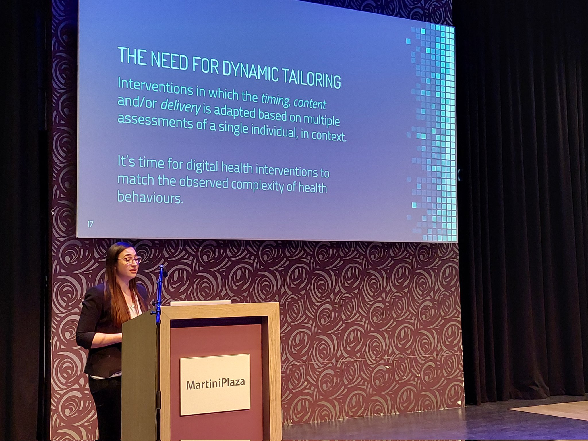
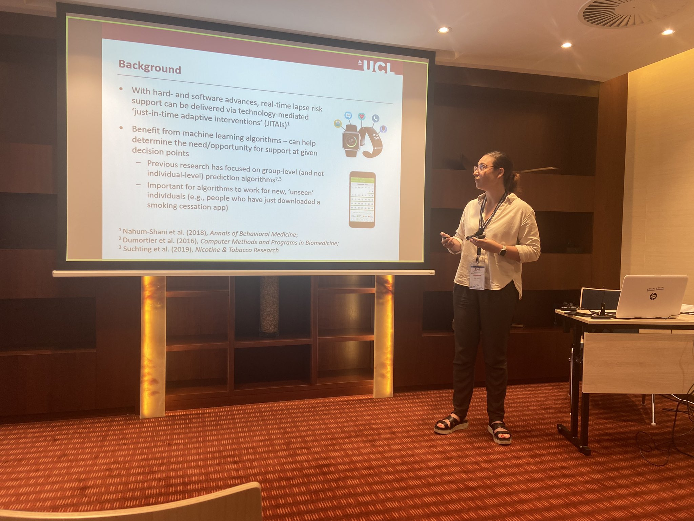
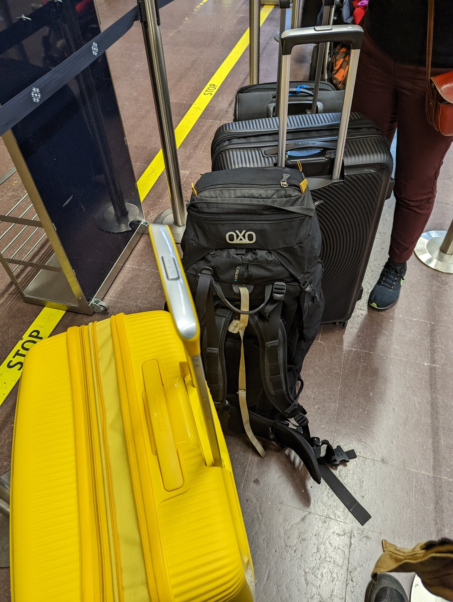

I’m an interdisciplinary researcher and practitioner health psychologist working at the intersection of behavioural science and technology. My research is focused on the development, optimisation and evaluation of interventions for smoking cessation and alcohol reduction delivered via smartphone apps, chatbots and virtual reality. I’m interested in the technology-enabled, real-time assessment and modelling of within-person processes and associated “just-in-time adaptive interventions”, which can provide the right type of support to people, when it’s most needed. I’m an advocate of Open Science. I act as Co-Director for the Open Digital Health initiative, which aims to enable the scaling and sharing of evidence-informed digital health tools.
Brief bio
PhD
I completed my PhD in Health Psychology at University College London (UK) in 2018, with a thesis focused on the definition, measurement and promotion of user engagement with digital behaviour change interventions.

Research Fellow / Senior Research Fellow
After completing my PhD, I worked as a Research Fellow (2018-2021) and subsequently as a Senior Research Fellow (2021-2022) in the UCL Tobacco and Alcohol Research Group (London, UK).


Marie Skłodowska-Curie Postdoctoral Research Fellow
In 2022, I was awarded a 3-year European Commission Marie Skłodowska-Curie Postdoctoral Fellowship to work on project “COMPLAPSE”. During my fellowship, I will spend two years in the Herbert Wertheim School of Public Health and Human Longevity Science at the University of California, San Diego (USA) and one year in the Faculty of Social Sciences at Tampere University (Finland).
